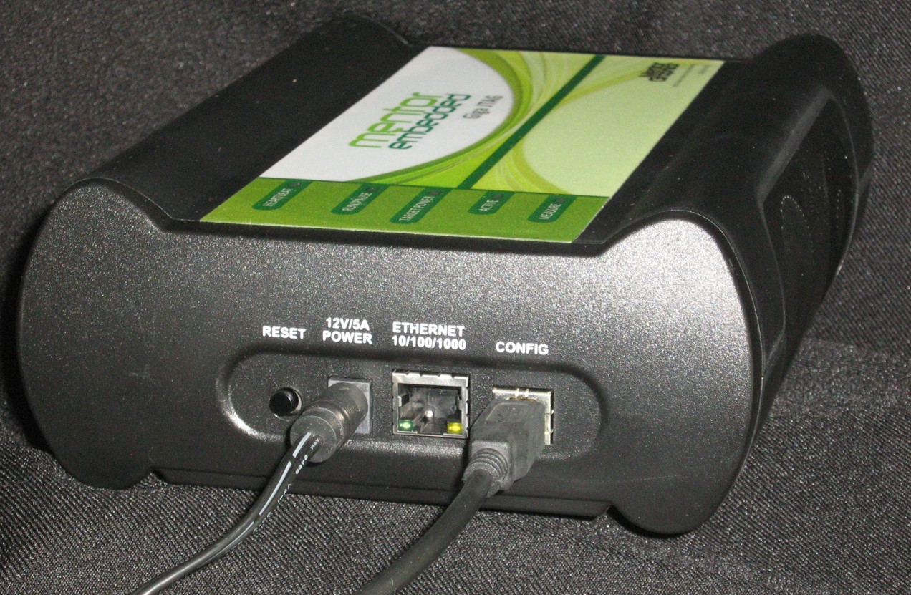

Sourcery Probe Console
There are two ways you can access the Sourcery Probe console: USB and telnet. The following sections describe how to use both access methods.
Accessing the Sourcery Probe Console via USB
This section provides the steps required to establish serial communication with the probe, which is required for some configuration procedures.
Procedure
- Connect one end of the USB cable (P/N 600-76787) to a USB port on your host computer.
- Connect the other end of the USB cable to the USB connector of the probe, labeled CONFIG, shown in Figure 4‑1.
Figure 4‑1.  Sourcery Probe Professional with USB Cable Attached
- In Windows, you might need a driver before you can access the CONFIG port. The driver is installed automatically. If you find that drivers are not automatically installed:
- Click the Windows Start button and type device into the search box.
- Click Device Manager in the search results to launch it.
If the probe registered, but failed to find drivers, there will be two USB devices listed in the Device Manager screen with problems ( ). Right-click the USB device and select the option to install or update the drivers. Select the option to search Microsoft Update for a driver.
- Identify the serial port device assigned to the probe.
- In Windows® XP, select
Start > Settings > Control Panel >Administrative Tools > Computer Management > Device Manager > Ports and then select USB serial port from the ports list.
- On Windows 7, select Start > Control Panel >Hardware and Sound > Device Manager > Ports (COM & LPT).
- On Linux, the device file is located at: /dev/ttyUSB0.
- Set up your terminal or terminal communication software (for example, Sourcery CodeBench Terminal View) as shown in Figure 4‑2.

- Turn on power to the probe. If the power is already on, push the reset button.
- When prompted, press Enter. A boot screen will appear. Follow the instructions in the boot screen,
- Once you are connected to the probe, the login banner is displayed and the core> command-line prompt appears. Type help for a list of the core commands.
Accessing the Sourcery Probe Console Using Telnet
You can use telnet to connect to the Sourcery Probe Professional Target configuration console remotely over Ethernet.
Procedure
- Start a telnet session and connect to the Configuration console for the probe. You can use the Terminal view in Sourcery CodeBench to do this. To open the Terminal view, from Sourcery CodeBench select Window > Show Views > Other. From the Show View dialog box, Select Terminal > Terminal and click OK.
telnet {hostname | ip_address}
Use the host name or IP address of the probe. For static IP, the host name must be the same one you entered into the hosts database file. The Configuration port number of the probe is 23.
The login banner is displayed, followed by the core> command-line prompt.
Results
You should now have access to the configuration console for your target system.
Related Topics
Using netparam to Configure the Sourcery Probe Professional